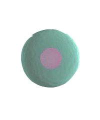

-
Urine
Urine is a slightly acidic fluid which carries
8
waste from the kidneys to the outside world.
Urea is, among other things, a diuretic. -
Blood
The fluid consisting of plasma, blood cells, and
5
platelets that is circulated by the heart through
the vertebrate vascular system, carrying oxygen and
nutrients to and waste materials away from all body tissues. -
Stool
The solid waste that is left after food is
3
digested. Stool forms in the intestines
and passes out of the body through the anus. -

Tissue
Biological tissue is a collection of interconnected
3
cells that perform a similar function
within an organism. -
Saliva
is a watery substance located in the mouths of organisms, secreted
3
by the salivary glands. It serves as a lubricative function,
wetting food and permitting the initiation of swallowing, and
protecting the mucosal surfaces of the oral cavity from desiccation.